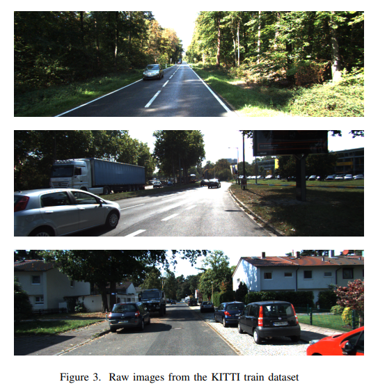
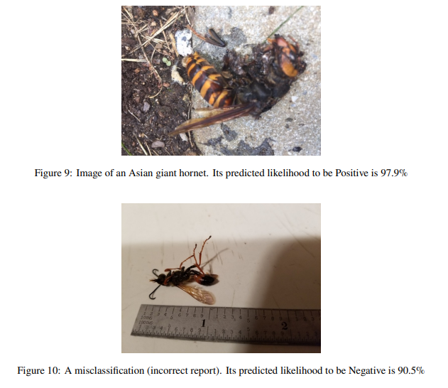
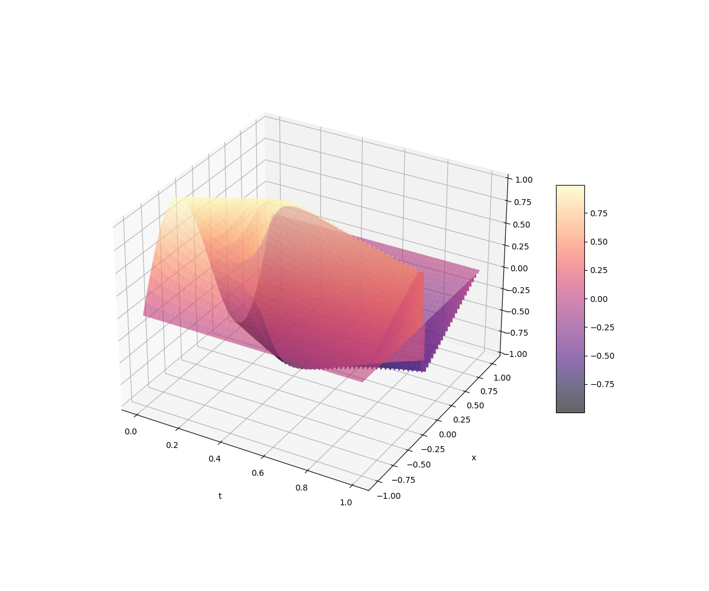

|
|
Applications of Machine Learning and Deep Learning to various fields. |

|
Machine Learning Pipelines for Microscopic Images Processing
Natalie Pham, Gautami Kant Slide, Spring 2023 A project collaborated with Bristol Myer Squibb. By applying machine learning techniques, meaningful pseudo-labels can be assigned to images, such as distinguishing between ill-formed and well-formed protein droplets or identifying different conformations of HS-AFM molecules. This process reduces the need for manual labeling of new data, saving time and effort. |

|
Art Works Classification
Natalie Pham, Tianhan Ling, Jie Sing Yoo Slide, report, Spring 2023 Can a neural network model perform better in identifying the genre and artist of an art piece by inspecting various properties of the art? This project involved experimenting with difference CNN structures for the multi-class classification task to distinguish various genre, such as impressionism, pop-art, surrealism, of art works. |

|
Behavioral Risk Factor Surveillance System Analysis
Tianhan Ling, Alice Wu, Natalie Pham Slide, Fall 2022 This project investigated how behaviour and health conditions might affect General Health Status of people. This aims to identify populations at increased risk of chronic health conditions. XGBoost or Random Forest models, with oversampling to resolve the issue of imbalanced classes, gave the highest prediction accuracy of 80%. |
|

|
3D Object Detection with Point Cloud and Semi-supervised Learning
Thanh Ngoc Pham Report, Summer 2021 Analyse existing point-based 3D object detection models and propose an improvement version of the PV-RCNN model using Confidence Regularized Self-Training framework for pseudo-label generation in the context where labeled data is limited. |
|

|
Analyze Data from Public Reports of Asian giant hornets in Washington
Hoang Son Nguyen, Thanh Ngoc Pham, Khoi Nguyen Phan Report, Spring 2021 The Asian giant hornet is an invasive species and causes potential harm to the environment and agriculture industry of Washington, the state need to locate the Asian giant hornet eradicate them before they growth and spread through out America. We used public sighting reports to predict the spread of the Asian giant hornet and model the likelihood of false public report of the Asian hornet. |
Optimization and numerical methods for Partial Differential Equations (PDEs) |

|
Survey Gradient Descent Methods for Optimizing the Optimal Control Problem
Natalie Pham Spring 2023 Used various gradient descent methods to solve the Optimal Control Problem under the constraint of a linear PDE with Dirichlet Boundary Conditions. Evaluated their performance in terms of both computational runtime and solution accuracy. |

|
Solve a Laplace Equation Using Parallel Computing
Natalie Pham Fall 2022 Given a boundary condition, simulate the diffusion of heat across a 2D grid using Jacobi method in a parallel computing environment to approximate the temperature distribution over time. By leveraging parallelism through a parallel algorithm using the Message Passing Interface (MPI), the computation time was almost 7 times faster than that of the serial implementation. |
|

|
Reduced-order Modelling and Neural Network approach for time-dependent PDEs
Natalie Pham Slide, Spring 2022 Traditional solvers (such as finite difference or finite elements method) for time-dependent PDEs usually suffer from expensive cost of computation for difference parameters. Utilizing reduced-order modeling and neural network approach allows us to efficiently derive numerical solutions to a range of time-dependent PDEs, eliminating the need to repeatedly compute solutions using resource-intensive traditional solvers for varying parameters. |